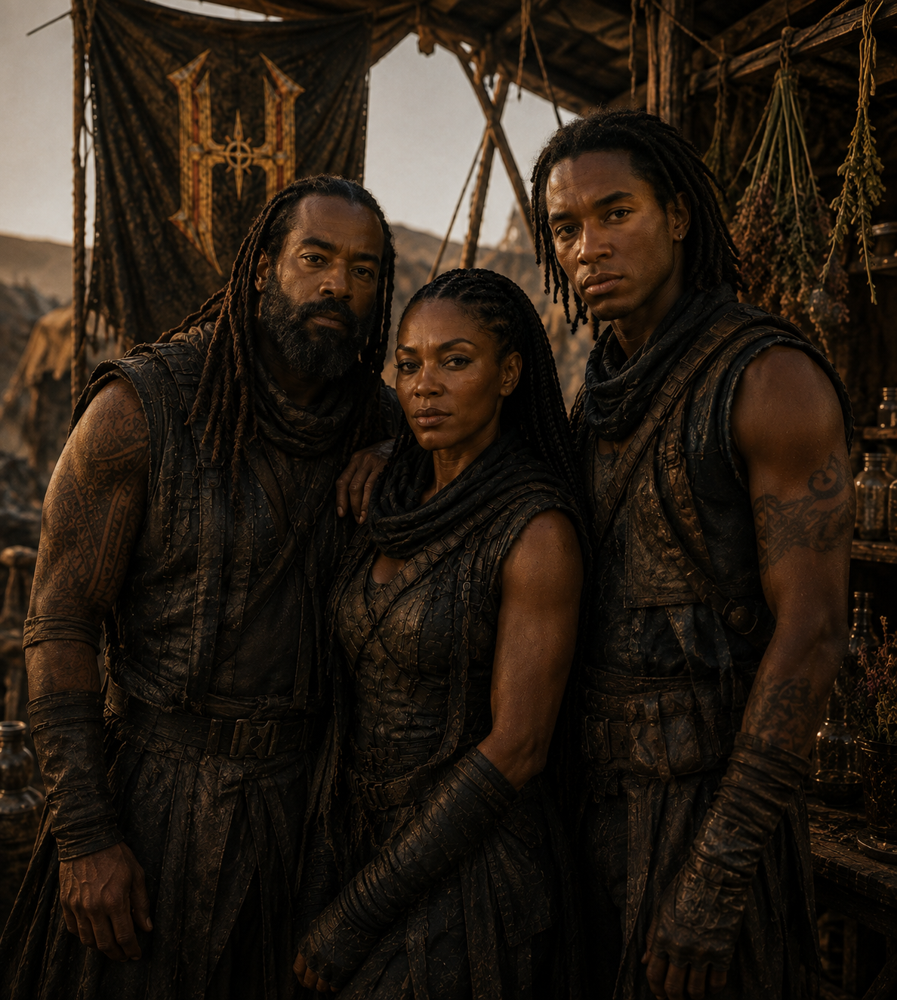
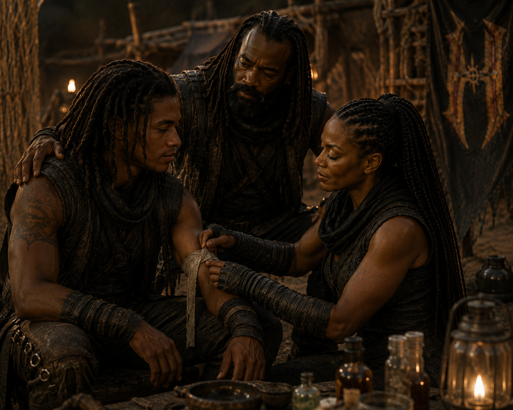

O MARIDO
Ao lado de Clhoe, ocupa o espaço que nenhuma patrulha alcança: a certeza de que uma missão pode terminar em encontro, não em despedida.
IDENTIFICAÇÃO // PRESERVADA NO ARQUIVO FAMILIAREntre ruínas, rotas e vigílias, há duas presenças que fazem Clhoe transformar sobrevivência em promessa: o marido e o filho.

Clhoe não promete que o mundo será seguro. Ela promete fazer do próximo abrigo um lugar onde eles possam respirar, descansar e existir sem precisar olhar para trás a cada passo.
Ao lado de Clhoe, ocupa o espaço que nenhuma patrulha alcança: a certeza de que uma missão pode terminar em encontro, não em despedida.
IDENTIFICAÇÃO // PRESERVADA NO ARQUIVO FAMILIAREle é a prova de que o futuro ainda merece defesa. Cada passo seguro e cada noite calma existem para que seu caminho não seja definido apenas pelas ruínas.
IDENTIFICAÇÃO // PRESERVADA NO ARQUIVO FAMILIAR
O perigo não é uma abstração para Clhoe. Ele tem rotas, portas e nomes. Por isso a família não fica fora da história: ela é o motivo pelo qual Clhoe continua de pé.
VER OS REGISTROS DA FAMÍLIA →Em um mundo onde nomes podem atrair perigo, os vínculos falam primeiro.
VOLTAR AO DOSSIÊ DE CLHOE ←